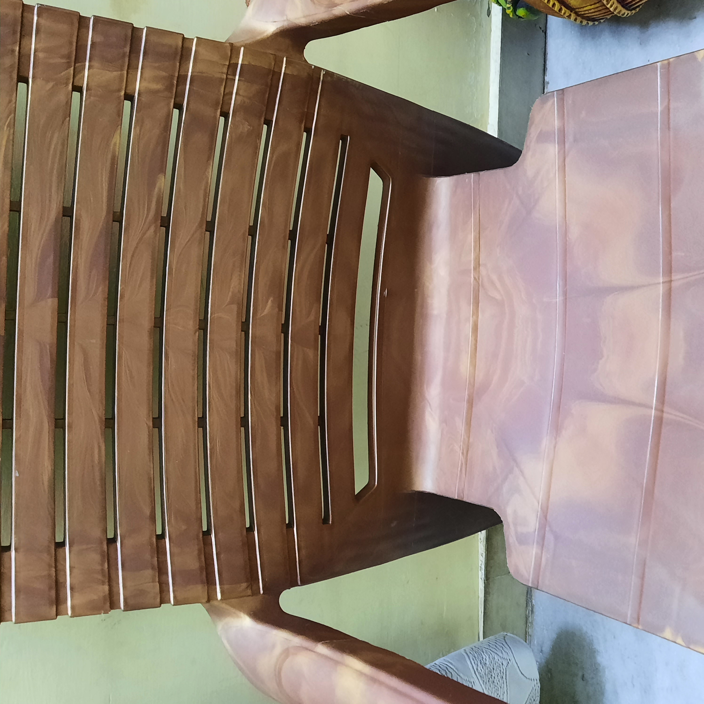
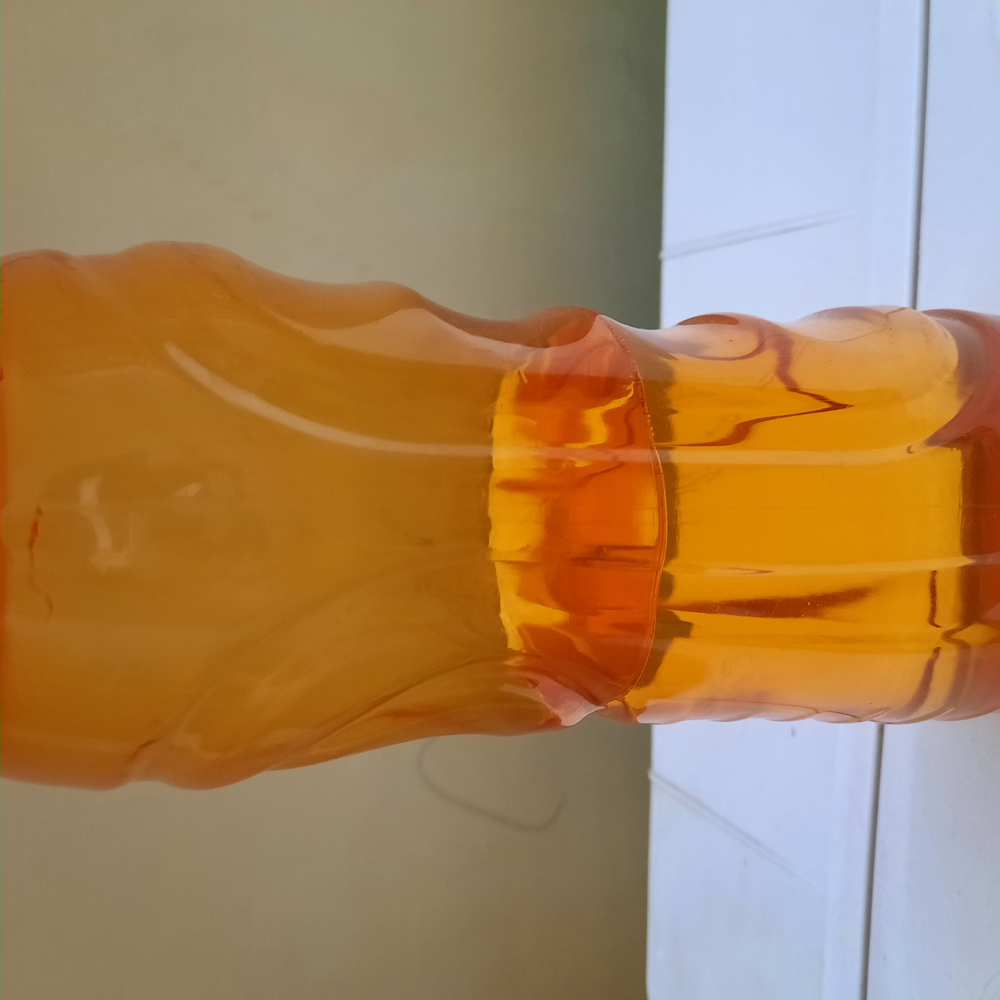
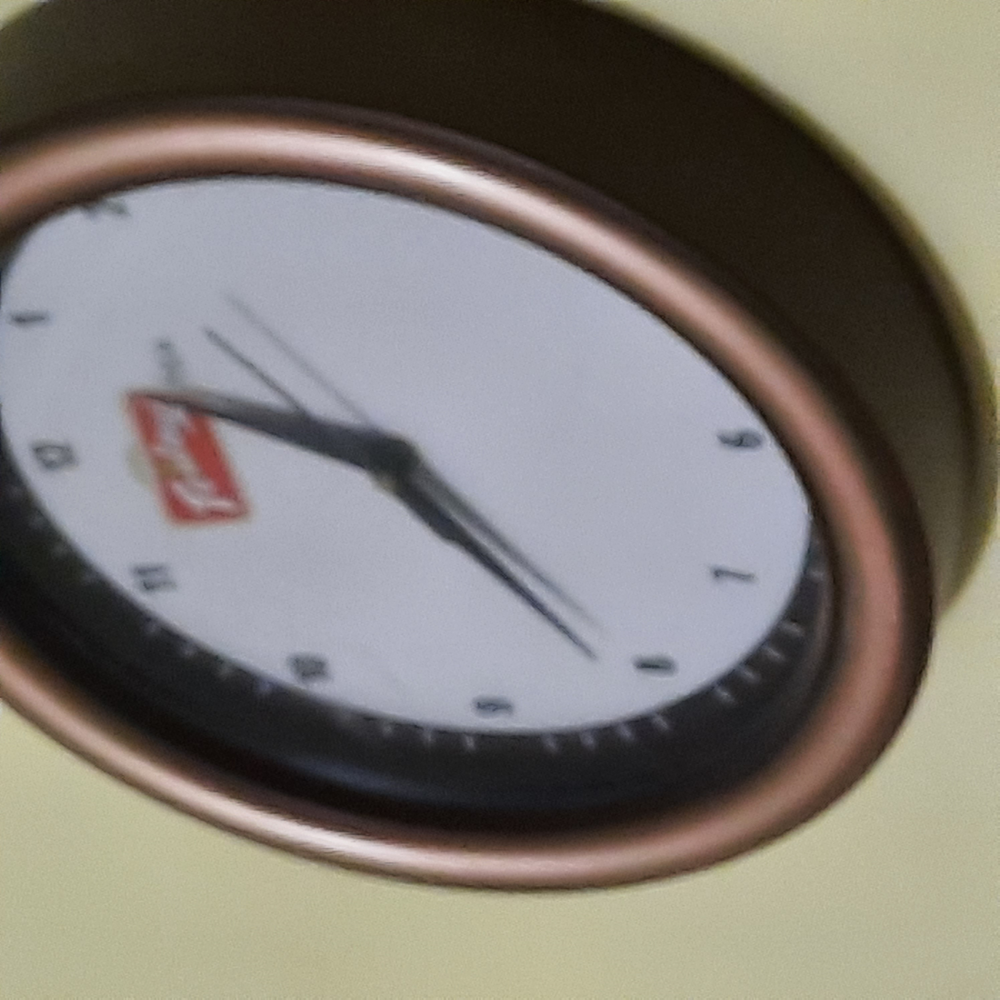

Case Study between GOOGLE LENSE & MOBILENET
Test Image - 1

Output on
GOOGLE LENS
- chair
Output on
MOBILENET MODEL
-Shower Curtain
Result - Here in recoginzing the chair Google Lens was accurate
Test Image -2

Output on
GOOGLE LENS
-Water bottle
Output on
MOBILENET MODEL
- Water bottle
Result - After recoginzing Both Mobilenet and Google lens were accurate
Test Image - 3

Output on
GOOGLE LENS
-Wall hanging clock
Output on
MOBILENET MODEL
- Wall clock
Result - after recorgnizing both Mobilenet and google Lens were accurate